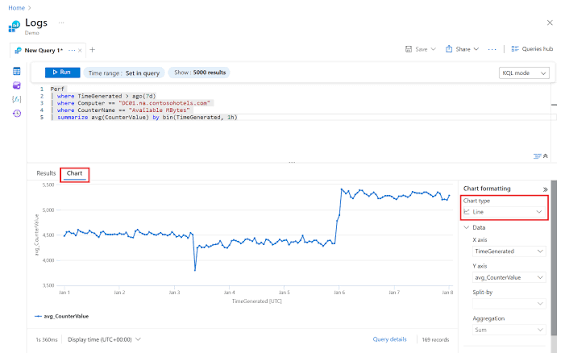

KQL Investigation • Log Analysis • Hypothesis-Driven Hunting • MITRE ATT&CK • Incident Escalation
Threat hunting is a proactive security activity where analysts search for suspicious behavior that may not yet be detected by automated alerts. It uses logs, hypotheses, threat intelligence, and attacker behavior models.
As a Security Analyst, I use Microsoft Sentinel, Log Analytics, KQL, and Defender XDR to search for unusual patterns, validate suspicious activity, and escalate confirmed findings for incident response.
My hands-on experience includes building hunting queries, reviewing authentication activity, analyzing endpoint and network signals, mapping findings to MITRE ATT&CK, and documenting investigation results.
Threat Hunting with Microsoft Sentinel and Log Analytics

This project demonstrates my practical experience with threat hunting in a Security Operations Center workflow. The objective was to proactively identify suspicious activity by asking focused questions and searching across security logs.
I created hunting hypotheses, used KQL queries to inspect log data, reviewed unusual sign-ins and endpoint events, and correlated findings with known attacker tactics and techniques.
The project also included validating suspicious results, reducing false positives, documenting evidence, and escalating confirmed threats for incident response.
Security Analyst
Proactive SOC Operations
Microsoft Sentinel and KQL
Hunting, Validation & Escalation
Microsoft Security Stack
KQL • Log Analysis • MITRE ATT&CK
Activities performed while working on threat hunting
Built focused hunt ideas based on attacker behavior, alerts, identity activity, and threat intelligence.
Used KQL to search logs, filter suspicious events, and find related activity across data sources.
Correlated authentication, endpoint, cloud, and security events to understand activity patterns.
Documented evidence, mapped behavior to MITRE ATT&CK, and escalated confirmed threats.
Security tools and investigation methods used throughout the project
✔ Created threat hunting hypotheses.
✔ Built KQL queries for suspicious activity analysis.
✔ Correlated security events across multiple data sources.
✔ Mapped findings to MITRE ATT&CK techniques.
✔ Documented and escalated confirmed suspicious activity.
Threat Hunting
KQL
Log Analysis
Microsoft Sentinel
MITRE ATT&CK
Incident Investigation
Security improvements achieved through proactive threat hunting
Identified suspicious behavior that may not have triggered a standard alert.
Used log analysis to improve understanding of identity, endpoint, and cloud activity.
Turned hunt questions into practical KQL searches and evidence-based conclusions.
Connected related events across data sources to understand suspicious behavior.
Used Sentinel, Defender XDR, Entra ID, and Log Analytics in one investigation workflow.
Documented confirmed findings clearly so response teams could act quickly.
This page showcases my hands-on experience with threat hunting, where I build KQL queries, analyze security logs, map behavior to MITRE ATT&CK, validate findings, and support incident response.
KQL Investigation • Log Analysis • Proactive Detection
Threat hunting process followed during security operations
Defined a hunt question based on attacker behavior, alerts, or threat intelligence.
Used KQL to search Microsoft Sentinel and Log Analytics data for suspicious events.
Correlated events, reduced false positives, and mapped behavior to MITRE ATT&CK.
Documented confirmed suspicious activity and supported incident response handoff.
End-to-end lifecycle followed during proactive threat hunting.
Hypothesis Development
Defined a hunt objective, data sources, suspicious behaviors, and expected evidence.
Microsoft Sentinel and Log Analytics
Selected relevant logs from identity, endpoint, cloud, and security data sources.
Kusto Query Language
Built and refined queries to find suspicious patterns and related activity.
MITRE ATT&CK Mapping
Validated findings, reduced noise, and mapped behavior to attacker techniques.
SOC Escalation
Documented evidence, recommended next actions, and escalated confirmed threats.